PROYECTOS
Perfil itch.io

🏚 In Her Place
Descripción:
In Her Place es un videojuego de género survival horror donde el jugador toma el rol de Cathy.
Tras aceptar una invitación de su compañero de carrera, Markus, para una sesión de estudio en su mansión,
Cathy despierta desconcertada, sola en un lúgubre y misterioso lugar.
Para escapar, Cathy deberá resolver puzzles y enfrentarse a extrañas criaturas que habitan en los oscuros pasillos de la mansión. A medida que avanza, descubrirá secretos inquietantes mientras lucha por sobrevivir.
Jugar ahora🎮 Mi aporte
🎮 Movimiento del Jugador
Implementé el sistema de movimiento del jugador utilizando el Input System de Unity, con una mecánica de desplazamiento tipo tanque. Además, añadí la funcionalidad de correr al mantener presionada una tecla.
Ver código en GitHub⚔️ Modo Combate
Implementé un sistema de Modo Combate rítmico que se activa al presionar una tecla específica.
Este sistema incluye:
- Transición dinámica al estado de combate
- Visualización de ritmo y señales de timing
- Validación precisa de entradas dentro de la ventana correcta
- Verificación de combinación de teclas
- Activación de animaciones y gestión de daño
👾 Sistema de Aparición Dinámica de Enemigos
Implementé un sistema de spawn dinámico que se mueve constantemente dentro de una zona delimitada del escenario, generando aleatoriedad en la aparición de enemigos.
Incluye:
- Movimiento autónomo del punto de spawn dentro de un área definida
- Detección del jugador mediante colisiones
- Aparicion de enemigos en el punto del spawn
- Control del ciclo de vida del spawn en función del enemigo actual
🧠 IA Enemiga: Movimiento, Ataque y Muerte
Implementé el comportamiento de la IA enemiga utilizando Unity NavMesh para que los enemigos persigan dinámicamente al jugador dentro del escenario. El sistema permite que el enemigo:
- Detecte y siga al jugador cuando entra en su rango de visión.
- Alcance una distancia de ataque y active una animación ofensiva cuando está lo suficientemente cerca.
- Reaccione al daño recibido mostrando un efecto visual (partícula) y reduciendo su vida.
- Sea destruido automáticamente al alcanzar 0 de vida, removiéndose del escenario.
🧩 Interacción con Objetos y Puzzles
Implementé un sistema de interacción contextual con objetos del entorno y elementos de puzzle.
- Se activa una transición de cámara utilizando Cinemachine, que enfoca el objeto desde un ángulo cinemático.
- Se desencadenan eventos específicos en el entorno como animaciones, desbloqueo de puertas o activación de mecanismos.
- Durante la interacción:
- El movimiento del jugador se desactiva para mantener la atención en el evento.
- Los enemigos detienen su IA (NavMesh y ataques) hasta que finalice la interacción.
🔌 Puzzle de Voltaje y Amperaje
Desarrollé un puzzle interactivo donde el jugador debe manipular una serie de interruptores (switches) para lograr que una aguja indicadora se estabilice dentro de una zona marcada, simulando correctamente los niveles de voltaje y amperaje requeridos por un sistema eléctrico.
Una vez el puzzle es resuelto. Se activa una transicion de camara para mostrar una animacion de apertura de una puerta
Ver código en GitHub🔢 Puzzle Numérico de Suma
Implementé un puzzle de lógica en el que el jugador debe seleccionar números en un panel numérico y sumar correctamente para alcanzar el valor objetivo mostrado en pantalla.
El panel incluye:
- Un display central que muestra el valor objetivo de la suma.
- Un teclado numérico con los dígitos del 1 al 9.
- Un contador de intentos que activa un cambio de luz.
Una vez el puzzle es resuelto. Se activa una transicion de camara para mostrar una animacion de apertura de una puerta
Ver código en GitHub🧩 Puzzle de Reorganización tipo 15
Implementé un rompecabezas inspirado en el clásico “15 Puzzle”. El jugador controla un selector móvil que se desplaza con las teclas de dirección.
Para mover una ficha, el selector debe estar sobre ella, y solo podrá moverla si está adyacente al espacio vacío, simulando el deslizamiento típico de este tipo de juegos.
Una vez el puzzle es resuelto. Se activa una transicion de camara para mostrar una animacion de apertura de una puerta
Ver código en GitHub
🪞 Nightmare Mirror
Descripción:
Nightmare Mirror es un juego de acción y aventura en tercera persona con tintes de terror psicológico. La historia sigue a Salem, una joven estudiante que, durante una clase de matemáticas, cae en un profundo sueño sobre su pupitre. Al despertar, descubre que está completamente sola en su salón.
Al salir al pasillo, el mundo que conocía se ha transformado en una versión oscura y distorsionada de su escuela: un reflejo siniestro, una dimensión paralela donde todo parece moverse con vida propia. En esta pesadilla viviente, Salem deberá recorrer los pasillos deformes, enfrentar criaturas monstruosas y mantener la cordura mientras la línea entre el sueño y la realidad comienza a desvanecerse.
Jugar ahora🎮 Mi aporte
🌀 Teletransporte Aleatorio entre Zonas
Implementé una mecánica de teletransporte aleatorio que permite al jugador ser transportado automáticamente a uno de varios puntos de spawn disponibles al entrar en contacto con un portal.
El sistema funciona con una lista de ubicaciones predefinidas distribuidas en diferentes zonas del mapa. Al activar el portal:
- Se selecciona aleatoriamente un punto de la lista.
- El jugador es trasladado instantáneamente a dicha ubicación.
- El sistema garantiza una distribución dinámica del gameplay y añade un componente de sorpresa.

🗺️ Organización de Escenarios y Ambientación
Me encargué de la organización, ambientación y disposición de elementos en los cinco escenarios principales del juego. Aunque los modelos 3D fueron creados previamente, diseñé la distribución dentro del motor para mejorar la narrativa visual.
- Ubicación estratégica de objetos y props.
- Asignación de música ambiental específica por nivel.
- Configuración de iluminación para reforzar atmósferas (oscuridad, misterio, calma, etc.).
- Ajustes de tonalidades y efectos visuales usando herramientas de iluminación en Unity.
El resultado fue una ambientación coherente y emocionalmente impactante para el jugador.


🤖 Machine Run
Descripción:
Machine Run es un videojuego de tipo Endless runner desarrollado en Unity durante
la Game Jam de Generation Col-Mex. En un futuro distópico dominado por una inteligencia artificial hostil,
tomas el rol del último humano libre, huyendo de una gigantesca fábrica de reciclaje humano.
Corre, esquiva y sobrevive mientras las hordas de robots intentan eliminarte. Solo tus reflejos y algunos power-ups podrán mantenerte con vida en esta carrera por la humanidad.
Jugar ahora🎮 Mi aporte
🤖 Movimiento del Jugador
Me encargué de la programación completa del movimiento del jugador en este proyecto. El personaje cuenta con una animación continua de carrera que se reproduce de forma constante, mientras el jugador puede desplazarse entre tres carriles distintos usando las teclas A y D.
Ver código en GitHub🤖 Manejo de Escenario
Programé el sistema de desplazamiento del escenario, el cual se mueve en dirección a la cámara, generando la sensación de que el personaje avanza corriendo de forma continua.
- El escenario está dividido en secciones reutilizables.
- Cuando el jugador alcanza cierto punto, la sección que queda atrás se reposiciona al final, simulando un entorno infinito.
- Al alcanzar una puntuación determinada, se activa una partícula de portal que marca la transición de escenario.
🤖 Sistema de Enemigos
Implementé el sistema completo de enemigos y su comportamiento dentro del juego. Los enemigos aparecen de forma dinámica y reaccionan a la posición del jugador.
- Los enemigos spawnean en uno de los tres carriles disponibles.
- Mediante NavMesh, se desplazan hacia el jugador siguiendo su carril.
- Cada enemigo tiene su animación de caminar para una apariencia más realista.
- Dos tipos de enemigos:
- Enemigo que solo camina hacia el jugador.
- Enemigo que dispara proyectiles.
- Sistema de pool de proyectiles para optimizar el rendimiento.
- Los disparos incluyen sonido y partículas que se activan al disparar.
- Tanto el enemigo como los proyectiles cuentan con detección de colisión para dañar al jugador y activar partículas de impacto.
🤖 Sistema de Power-Ups
Implementé el sistema de aparición y funcionamiento de power-ups para potenciar la jugabilidad y ofrecer ventajas estratégicas al jugador.
- Un spawn de power-ups genera aleatoriamente uno de dos tipos posibles cada cierto tiempo.
- Power-Up de vida:
- Recupera una vida al jugador.
- Controla que el máximo de vidas no supere 3 unidades.
- Power-Up de escudo:
- Activa una partícula de cápsula de energía alrededor del jugador.
- Vuelve al jugador inmune al daño durante un tiempo limitado.
- Al colisionar con obstáculos o enemigos, genera un sonido especial diferente al daño normal.
🤖 Manejo de la Interfaz In-Game
Desarrollé el HUD del juego para mostrar información clave al jugador en tiempo real, con actualización automática según las acciones y eventos del gameplay.
- Contador de puntaje:
- Aumenta cuando el jugador esquiva con éxito un obstáculo o enemigo.
- El puntaje se muestra y actualiza dinámicamente en pantalla.
- Indicador de vidas:
- Reduce la cantidad de vidas visibles cuando el jugador recibe un golpe.
- Aumenta la cantidad de vidas en pantalla al obtener el Power-Up de vida, respetando el límite máximo de 3 vidas.

👥 Sistema de Gestión de Usuarios
Descripción:
El Sistema de Gestión de Usuarios es una aplicación web completa
desarrollada bajo una arquitectura Frontend + Backend desacoplada,
orientada a la administración segura de usuarios mediante autenticación,
registro, búsqueda, actualización y eliminación.
El sistema combina un backend REST API desarrollado en Flask (Python), un servicio de login implementado con Azure Functions para la generación de tokens JWT, y un frontend modular construido con HTML5, Bootstrap 5 y JavaScript Vanilla. Toda la comunicación entre capas se realiza mediante fetch y respuestas en formato JSON.
Ver código en GitHub⚙️ Arquitectura del sistema
La aplicación está dividida en tres capas principales, cada una con responsabilidades claramente definidas.
🔹 Login – Azure Function
- Implementado como HTTP Trigger en Azure Functions.
- Validación de credenciales contra base de datos SQL Server.
- Generación de token JWT utilizado como apiKey.
- Encapsula la lógica de autenticación, hashing de contraseñas y validación.

🔹 Backend – API REST (Flask)
- API REST desarrollada en Flask con SQLAlchemy.
- CRUD completo de usuarios.
- Endpoints protegidos mediante middleware JWT.
- Control de errores y respuestas estructuradas en JSON.

🔹 Frontend – Bootstrap + JavaScript
- Interfaz modular basada en iframes.
- Dashboard principal con carga dinámica de componentes.
- Comunicación entre módulos mediante postMessage.
- Consumo de la API mediante fetch autenticado.

📦 Módulos principales
🔹 Registro de Usuarios
- Formulario de creación de usuarios.
- Validación de contraseña y confirmación.
- Petición POST autenticada al backend.
🔹 Búsqueda de Usuarios
- Búsqueda por coincidencias de nombre.
- Visualización en tabla responsiva.
- Listado de usuarios recientes.
🔹 Actualización de Usuarios
- Edición de usuario mediante modal Bootstrap.
- Actualización de username y/o contraseña.
- Petición PUT autenticada.
🔹 Eliminación de Usuarios
- Selección de usuario desde tabla.
- Eliminación mediante petición DELETE.
- Validación previa del token.
🔐 Seguridad y buenas prácticas
- Autenticación basada en JSON Web Tokens (JWT).
- Tokens almacenados en localStorage.
- Middleware de validación y expiración de tokens.
- Hash seguro de contraseñas con SALT.
- Cierre automático de sesión por inactividad.
📱 Interfaz responsiva
La aplicación cuenta con un diseño totalmente responsive, adaptándose a diferentes tamaños de pantalla gracias al uso de Bootstrap 5, garantizando una experiencia fluida y consistente.
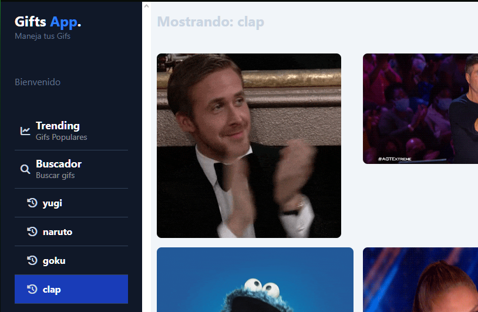
💻 GifApp - Angular 20
Descripción:
GifApp es una aplicación web desarrollada con Angular 20 y
TailwindCSS que permite a los usuarios buscar y visualizar
imágenes animadas en tiempo real mediante la integración de una API externa.
La aplicación cuenta con un sistema de trending para mostrar los GIFs más populares del momento, además de un historial persistente que se guarda en Local Storage del navegador, permitiendo acceder a búsquedas anteriores en cualquier momento y entre secciones.
Ver código en GitHub⚙️ Usos y Arquitectura de la Aplicación
La aplicación fue diseñada siguiendo los principios de modularidad y reutilización de componentes que ofrece Angular, lo cual hace que el código sea más óptimo, fácil de mantener y entender.
🔹 Estructura de módulos y componentes
- Componente de GIF individual
- Componente de Grid
- Componente de Historial
- Componente de Menú lateral
🔹 Tecnologías y buenas prácticas
- Señales de Angular 20: Manejo de estados reactivos de manera simple y eficiente.
- Consumo de API con Angular HttpClient: Integración directa con el framework y mejor control de peticiones.
- Persistencia de datos con Local Storage: Permite guardar el historial de búsquedas sin backend.
- Estilos con TailwindCSS: Uso de utilidades para un diseño consistente y mantenible.
🔹 Ventajas principales
- Código más modular y organizado.
- Componentes fácilmente reutilizables en otros proyectos.
- Menor duplicación de lógica.
- Mejor separación de responsabilidades.
- Facilidad para escalar y agregar nuevas funcionalidades.
⚡ Funcionalidades destacadas
🔍 Buscador dinámico
Los usuarios pueden buscar cualquier GIF escribiendo en el buscador. La aplicación consume la API en tiempo real y muestra resultados inmediatos con paginación y scroll adaptable.
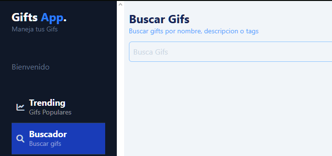
📂 Historial de búsquedas
Cada búsqueda se guarda automáticamente en el Local Storage. Este historial se mantiene incluso al cambiar de sección o recargar la página, permitiendo volver a búsquedas anteriores fácilmente.
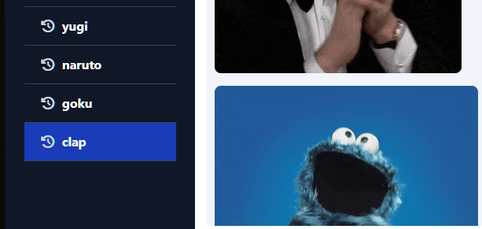
🔥 Sección Trending
Una sección dedicada a mostrar los GIFs más populares del momento según la API, actualizados de forma automática. Esto mantiene la aplicación dinámica y atractiva para el usuario.
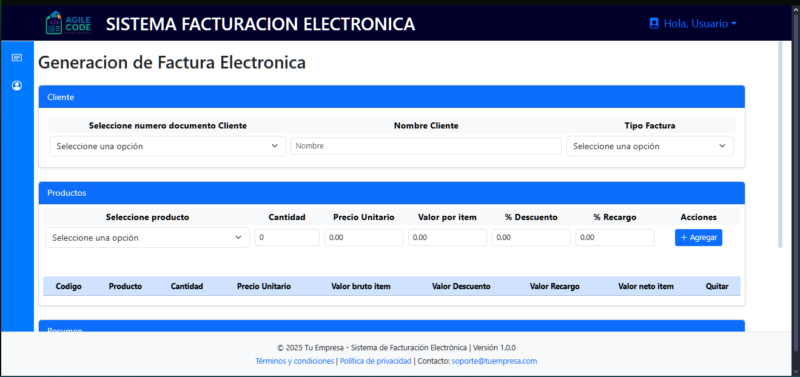
🧾 Sistema de Facturación Electrónica
Descripción:
El Sistema de Facturación Electrónica es una aplicación web desarrollada con
HTML, CSS, JavaScript y Bootstrap en el frontend, y un
backend en PHP basado en una API REST
para la conexión y gestión de la base de datos.
La aplicación integra el consumo de dos APIs: una propia para el manejo interno de datos y otra externa —Clarisa API— para la validación de facturas electrónicas. Todos los datos se gestionan en formato JSON, garantizando una comunicación clara y estructurada entre cliente y servidor.
Ver código en GitHub⚙️ Módulos principales de la aplicación
El sistema está compuesto por tres módulos principales, cada uno con su propia lógica y comunicación con el backend.
🔹 Módulo de Login
- Validación de credenciales contra la base de datos mediante la API REST PHP.
- Generación y almacenamiento seguro de un token de autenticación (login persistente).
- Bloqueo total del acceso a la aplicación hasta que la autenticación sea exitosa.
- Integración simultánea con la API de login de Clarisa para sincronizar el usuario.
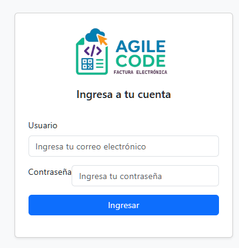
🔹 Módulo de Clientes
- Implementa un CRUD completo con consumo del backend PHP.
- Permite crear, editar, listar y eliminar clientes desde una interfaz clara y responsive.
- Incluye un submódulo para la gestión del tipo de documento.
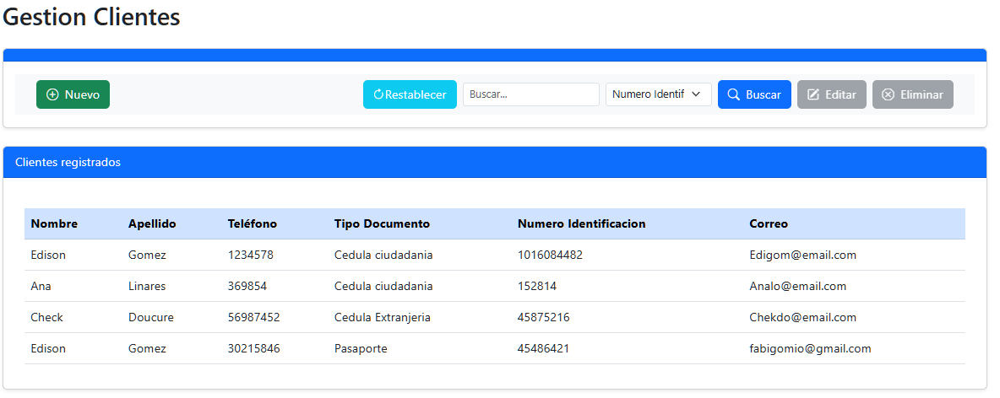
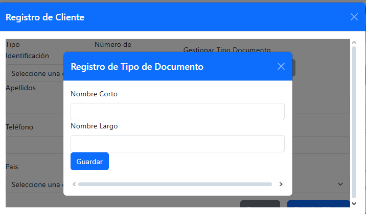
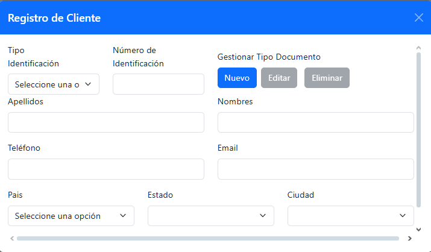
🔹 Módulo de Factura
- Generación completa de facturas con selección de clientes existentes o creación rápida.
- Búsqueda y adición dinámica de productos, con cálculos automáticos de impuestos, subtotales, descuentos y recargos.
- Selección de métodos y medios de pago personalizables.
- Envío directo de la factura para validación ante la API Clarisa.
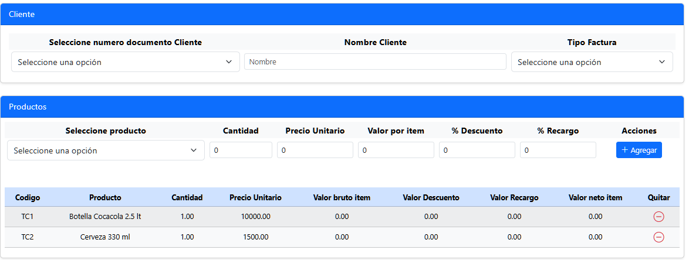
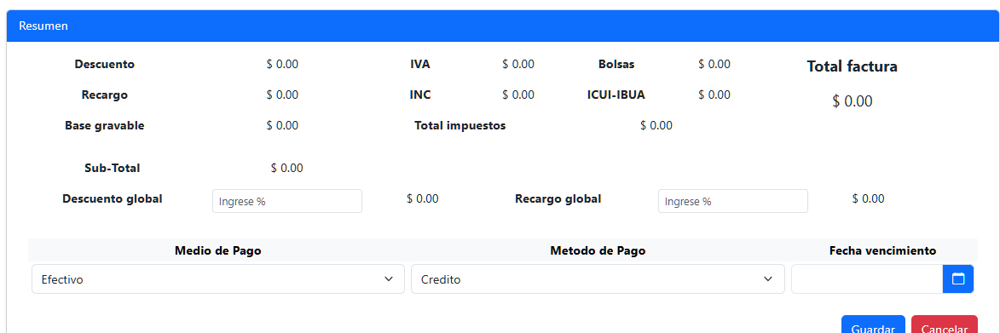

⚡ Características técnicas destacadas
- Frontend responsivo y moderno gracias a Bootstrap 5.
- Comunicación asíncrona entre frontend y backend mediante
fetchy JSON. - Validaciones automáticas en tiempo real en cada módulo.
- Mensajería dinámica con alerts personalizados según respuesta de la API.
- Arquitectura separada por capas: presentación, lógica de negocio y acceso a datos.
🔐 Seguridad y buenas prácticas
- Autenticación basada en tokens almacenados de forma segura en el navegador.
- Control de errores robusto en el manejo de peticiones y respuestas.
- Gestión eficiente de sesiones y validaciones previas al consumo de APIs externas.
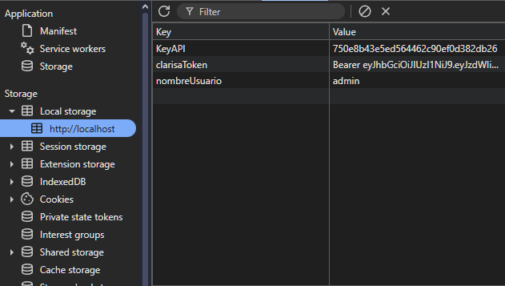
📱 Interfaz adaptativa
La aplicación se adapta a cualquier dispositivo gracias a un diseño totalmente responsive basado en Bootstrap, garantizando una experiencia fluida tanto en escritorio como en móvil.

🧠 Panther Framework — Actualización a PHP 8.4 y Angular 20
El Panther Framework es un entorno modular desarrollado en PHP orientado a objetos y Angular para la creación de microservicios RESTful y sistemas empresariales escalables. Esta actualización tiene como objetivo modernizar la arquitectura y optimizar su rendimiento, garantizando compatibilidad con las tecnologías más recientes del ecosistema web.
La nueva versión implementa una reingeniería completa del backend en PHP 8.4, con adopción de tipado estricto, atributos nativos y mejoras de rendimiento JIT. El frontend fue actualizado a Angular 20, incorporando standalone components, signals, lazy loading avanzado y RxJS 8 para una experiencia más reactiva y optimizada.
⚙️ Mejoras técnicas y optimizaciones
- Actualización total del núcleo PHP con clases abstractas mejoradas, tipado de retorno y atributos personalizados.
- Implementación del estándar PSR-12 y autoloading mediante Composer.
- Optimización del router REST para una gestión más eficiente de peticiones HTTP.
- Reestructuración del ORM interno para mejorar compatibilidad con MySQL 8 y MariaDB 10.
- Soporte para entornos Dockerizados y despliegue modular.

🔹 Frontend Angular 20
- Conversión completa a standalone components eliminando módulos heredados.
- Incorporación de Bootstrap 5.3 y FontAwesome 6 para UI moderna y accesible.
- Integración de servicios reusables para consumo de microservicios RESTful.
- Gestión avanzada de estados con Signals y optimización de ciclo de detección de cambios.

🔹 Seguridad y rendimiento
- Autenticación basada en JWT con expiración configurable y verificación por middleware.
- Validación estricta de cabeceras, métodos HTTP y roles de acceso.
- Cacheo inteligente de peticiones frecuentes y mejora del rendimiento general del framework.
- Gestión de errores estandarizada con respuestas JSON unificadas y códigos HTTP consistentes.

🚀 Arquitectura modular y escalable
El nuevo Panther Framework adopta un enfoque basado en microservicios, permitiendo que cada módulo —autenticación, usuarios, roles, auditoría o notificaciones— pueda ser desplegado de forma independiente, escalando según la demanda del sistema.
💡 Resultado
Con esta actualización, el Panther Framework se consolida como un entorno moderno, seguro y de alto rendimiento para el desarrollo de aplicaciones web escalables, ofreciendo compatibilidad total con las versiones actuales de PHP 8.4, Angular 20 y estándares REST.